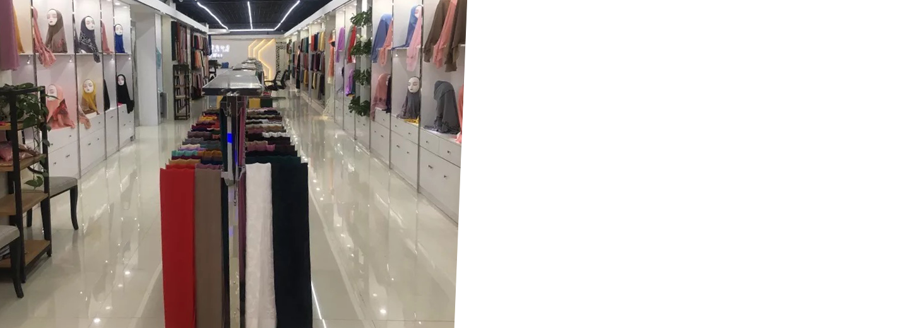

-
Jihong Fashion Co., Ltd.
Located in Yiwu, China, the factory has manufacturing area of 29 thousand sq. meters (7.2 acres).
-

High Quality Products
Renowned for its high quality products and services, the company has clients from all over the world.
Who We Are
Founded in 2009, JIHONG FASHION is one of the leading hijab fashion
manufacturers in China. Located in the "world trade center", Yiwu, the
company connects all of the orders from the world to the high quality fair
price Chinese manufacturing.
JIHONG FASHION has renowned reputation in the high quality products and services.
With a manufacturing area of 29 thousand sq. meters (7.2 acres), the company has
the whole production stages from weaving, dyeing, digital printing, cutting, sewing, ironing,
packaging, which leads a stable quality and sufficient production capacity of 1 million
pieces per month.
Weaving
A pivotal stage in the production of fabric and textiles: it involves interlacing two distinct sets of yarn or threads at right angles to form a fabric.
Dyeing
A critical stage in the textile production process where fabrics, yarns, or fibers are imparted with colors using dyes. Dyeing not only enhances the aesthetic appeal of textiles but can also add functional properties like UV protection or antimicrobial qualities.
Digital Printing
A modern method of textile printing that employs advanced inkjet technology to deposit dye or pigment directly onto textile materials. It produces intricate and multicolored designs quickly, in small batches, and with a high degree of customization.
Cutting & Sewing
A crucial phase in the garment production process, transforming flat fabric into a three-dimensional product that fits the human body. This stage follows design and pattern making and is the primary step in garment assembly.
Ironing
A process used to eliminate wrinkles and creases from fabrics, giving garments and textiles a smooth, finished appearance. While often considered a household chore, ironing is also an integral step in the textile and garment production process.
Packaging
A crucial process in the production and distribution of goods. It not only serves to protect and preserve the product but also plays a vital role in marketing, logistics, and waste management.